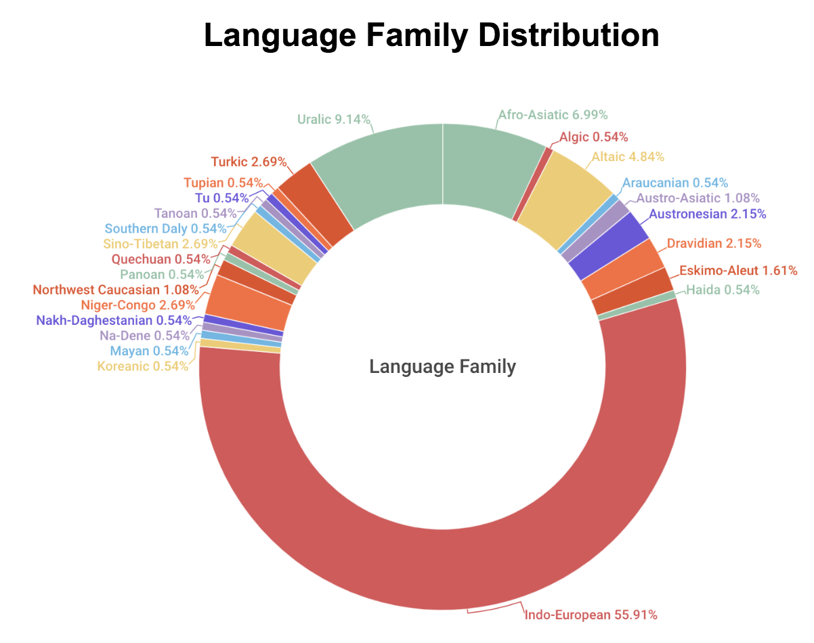

Summary Analysis
Besides typology, another type we can use to divide the languages is the language family, which is shown in this doughnut chart.A language family is a group of languages related through descent from a common ancestral language or parental language, called the proto-language of that family. In the chart, More than half of the languages are Indo-European languages, including French, Dutch, Polish, etc.
Uralic and Afro-Asiatic are the second and third largest language families. Uralic Languages are predominantly spoken in Northern Eurasia. Afro-Asiatic contains 300 languages that are spoken predominantly in West Asia, North Africa, the Horn of Africa and parts of the Sahel.
